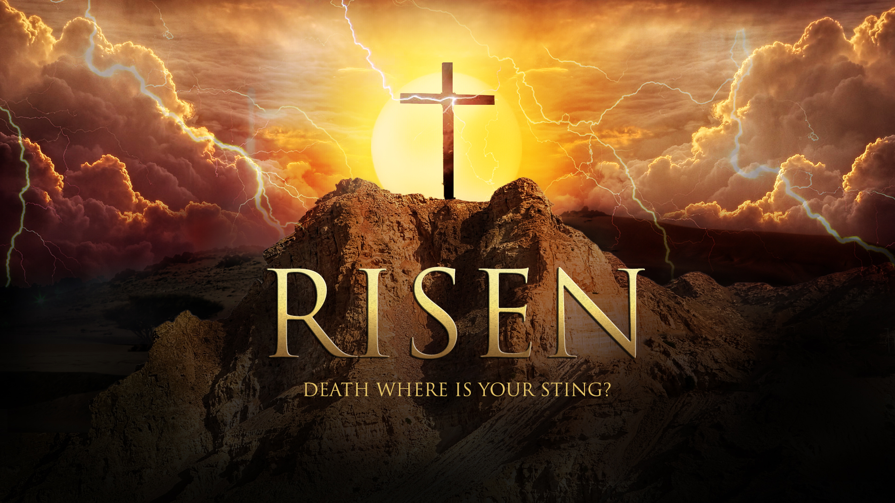

Yeshua Ha-Mashiach / Jesus Christ
King of Kings, Lord of Lords; The atoning sacrifice for the sins of the whole world.

Jesus said "I died, but see, I am alive forevermore, and I have the keys of death and of Hell."
--Revelation 1:18
Here's the time line of Jesus Christ:
- 3 B.C.E. - Angel Gabriel foretells the birth of John the Baptist to Zechariah
- 2 B.C.E. - Angel Gabriel foretells the birth of Jesus to Mary; she visits her relative Elizabeth
- 2 B.C.E. - :John the Baptist born and named; Zechariah prophesies; John to be in desert
- 2 B.C.E., c. Oct. 1 - Jesus born; “the Word became flesh”
- 1 B.C.E. or 1 C.E. - Astrologers visit; family flees to Egypt; Herod kills young boys; family returns from Egypt and settles in Nazareth
- 12 C.E., Passover - Twelve-year-old Jesus at the temple questions teachers
- 12 C.E. to 29 - Returns to Nazareth; continues subject to parents; learns carpentry; Mary has four more sons, as well as daughters
- 29, spring - John the Baptist begins his ministry
- 29, fall - Jesus baptized and anointed; Yahweh declares him his Son and approves him
- 29, fall - Tempted by the Devil in the Judean Wilderness
- 29, fall - First miracle at wedding in Cana of Galilee, turns water into wine
- 30 - Jesus first announces that “the Kingdom of the heavens has drawn near” in Galilee
- 30 - Heals official’s son; In Cana, Nazareth reads from Isaiah scroll which foretold of Him
- 31, Passover - Heals sick man at Bethzatha; Jews seek to kill him
- 31, Passover - Chooses 12 apostles, Gives Sermon on the Mount, Resurrects widow’s son
- 31 or 32 - Jesus gives Kingdom illustrations, Calms a storm from the boat, Sends demons into swine, Heals woman’s flow of blood; resurrects Jairus’ daughter
- 32, near Passover - Apostles return from preaching tour; Jesus feeds 5,000 men, People try to make Jesus king; he walks on sea; heals many
- 32, after Passover - Exposes human traditions, Heals Syrophoenician woman’s daughter; feeds 4,000 men
- 32, after Passover - On boat to Bethsaida, Jesus warns against leaven of Pharisees; heals blind man
- 32, after Passover - Keys of the Kingdom; foretells his death and resurrection, Transfiguration; Yahweh speaks
- 32, after Passover - Greatest in the Kingdom is a little child; lost sheep and unforgiving slave illustrations, On way to Jerusalem, tells disciples to set aside all for Kingdom
- 32, Festival of Tabernacles - Says “I am the light of the world”; heals man born blind, Sends out the 70; they return joyful
- 32, Festival of Tabernacles - Dines with Pharisee; condemns hypocrisy of Pharisees, Illustrations: unreasonable rich man and the faithful steward
- 32, Festival of Dedication - Fine shepherd and sheepfold illustration; Jews try to stone him; leaves for Bethany across Jordan
- 32, after Festival of Dedication - Teaches in cities and villages, traveling toward Jerusalem, Urges to enter narrow door; laments over Jerusalem
- 32, after Festival of Dedication - Teaches humility; illustrations: most prominent place and guests who made excuses
- 32, after Festival of Dedication - Lazarus dies and is resurrected by Jesus
- 32, after Festival of Dedication - Passing through, heals two blind men; visits Zacchaeus; ten minas illustration
- 33, Nisan 8 - Jesus arrives six days before Passover at Bethany
- 33, Nissan 9 - Enters Jerusalem triumphantly, riding on a donkey
- 33, Nissan 10 - Yahweh speaks; Jesus foretells his death; disbelief of Jews fulfills prophecy of Isaiah
- 33, Nissan 11 - Answers questions on God and Caesar, resurrection, greatest commandment
- 33, Nissan 11 - Illustrations: ten virgins, talents, sheep and goats
- 33, Nissan 12 - Jewish leaders plot to kill him, Judas arranges betrayal
- 33, Nissan 14 - Eats Passover with apostles, Washes feet of apostles
- 33, Nissan 14 - Jesus identifies Judas as traitor and dismisses him
- 33, Nissan 14 - Promises helper; illustration of true vine; gives command to love; last prayer with apostles
- 33, Nissan 14 - Agony in the garden; Jesus’ betrayal and arrest
- 33, Nissan 14 - Pilate seeks his release but Jews ask for Barabbas; sentenced to death on the torture stake
- 33, Nissan 14 - Dies on torture stake and becomes the sacrifice for the sins of the entire world
- 33, Nissan 14 - Body taken from the stake and placed in tomb
- 33, Nissan 15 - Priests and Pharisees get guard for tomb and seal it
- 33, Nissan 17 - Jesus resurrected three days later; appears five times to disciples
- 33, After Nisan 16 - Makes more appearances to disciples (1Co 15:5-7; Ac 1:3-8); instructs; commissions disciple-making
- 33, Iyyar 25 - Jesus’ ascension to Heaven, 40th day after his resurrection (Ac 1:9-12)